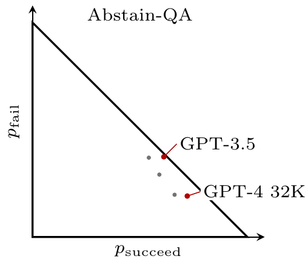

- LLMs are much more useful if they tell you their confidence.
-
When asking an LLM to do a task it’s reassuring to know that it’s successful in some fraction of cases, but it’s far more useful to know which cases it’s successful in:
- If you’re answering a question, I want to know your confidence in the answer.
- If you’re supplying a proof for a theorem, I want to know whether you think the proof is valid.
- If you’re fixing a bug, I want to know if you think the fix is going to work.
- If you’re writing a poem for me, I want to know if the poem is good.
Unfortunately until recently LLMs were trained just to maximize their success rates, and for that reason they often wouldn’t report useful signals of confidence, which made them much less useful. This I think is a good explanation of why LLMs hallucinate (argued in Kalai et al. (2025)), but the same logic illuminates some other cases.
The discussion below mostly follows Kalai et al. (2025), but adds some arguments and visualization I did when working with those authors in 2024 at OpenAI. I think these points are fairly well-known within the industry but ought to be better known outside it.
- This follows from a very simple model.
-
Suppose I have to make a choice among \(N\) options, and I have no priors about which is most likely to be right. Then it’s fine if the LLM just tells me which is the most-likely option, without telling me its probability.
However if we add a touch of realism, then it suddenly becomes much more useful if the LLM tells me its probability (or it admits when it doesn’t know). This will happen if any of the following are true: (1) I have some private information about the different options; (2) I can choose to spend some time verifying the proposed option, or searching for solutions; (3) I have the option of abstaining and not making a choice.
- Some implications.
-
- Models seem overconfident because they are trained only on accuracy, not on calibration. When models aren’t allowed to fold they learn to bluff.
- The value of a model will be a convex in its accuracy. Going from 90% to 100% accuracy is more than twice as valuable as going from 80% to 90%, because it lowers the cost of verification, and lowers the likelihood of abstention. This is only true when models don’t report their confidence.
- Benchmarks should report both accuracy and reliability. If you’re choosing betwen two models it’s useful to know not just the share of correct responses, but also whether the model will report when it fails (i.e. accuracy).
- Models are good self-critics. Somewhat surprisingly, a model can often identify its own mistakes. This makes sense for models that are trained only on accuracy, not on calibration, because they systematically exaggerate their success.
- In this post.
-
I state the model very briefly and give a nice visual aid, to show the optimal threshold for abstaining.
I also show how we can use a simplex diagram to illustrate tradeoffs between accuracy and confidence, showing both the frontier (plotting results from benchmarks) and .
Model
- Basic model: you just care about accuracy.
-
Suppose you have to choose which of \(N\) options is correct, you get \(u=1\) if you succeed and \(u=0\) if you fail. You have no idea which is right (uniform priors), but you know the LLM has information, and chooses the right answer with probability \(p\). In this case it’s sufficent for the LLM to report the option with the highest probability, and the user’s expected payoff is linear in the LLM’s average accuracy, \(p\).
- If you can abstain, payoff is convex in accuracy.
-
Now suppose the user can choose to abstain, i.e. they refuse to make a choice and get \(u=\pi_i\), with \(0<\pi_a<1\). Then they will only consult the model if \(p>\pi_a\), and so the value of the model will be convex in \(p\). The threshold here is the same as that derived in Chow (1970).

- If there is costly verification then payoff will be three-part.
-
Finally, now assume you can pay a cost \(c\) to verify whether an answer is correct, and if it’s wrong then you abstain. Then there will be three regions:
- If \(p\) is low, you don’t ask the LLM, and abstain.
- If \(p\) is intermediate you ask but verify (and abstain if it’s wrong).
- If \(p\) is high then you ask and trust without verification.

Simplex Representation
It’s very useful to draw the likelihood of three outcomes (succeed, fail, abstain) on a diagram.1 We can then draw indifference curves represnting different objective functions:
1 Economists know this as a Marschack-Machina diagram.

Each point in the simplex is a lottery over outcomes: a model might succeed with probability \(p_s\), fail with probability \(p_f\), and abstain with probability \(p_a\). The panels show three different objective families:
- Accuracy-only (\(U=p_s\)): success is rewarded, but failure and abstention are treated the same. This creates pressure to guess rather than abstain.
- Penalize failure (linear expected utility): failure is explicitly penalized relative to abstention, expanding the region where abstaining is optimal.
- F1 (a non-linear metric): indifference curves bend, reflecting that the metric itself builds in a particular tradeoff between attempting and being correct.
SimpleQA

Abstain-QA

Reading the simplex plots
The horizontal axis is \(p_s\) (succeed share) and the vertical axis is \(p_f\) (fail share). The remaining probability is \(p_a=1-p_s-p_f\) (abstain share), so points closer to the diagonal edge have lower abstention.
Moving down (lower \(p_f\)) corresponds to reducing failures; whether that is best depends on how much worse failure is than abstention (\(\pi_f\) vs \(\pi_a\)).
The labeled points illustrate that a model can look good under an “answer-everything” regime by pushing \(p_a\) toward zero, but that is exactly the regime that a payoff function with a harsh \(\pi_f\) would discourage.
Don’t over-interpret cross-benchmark comparisons: each source defines abstention differently, so these plots are best read as a geometric visualization of tradeoffs, not as a single unified leaderboard.
Appendix: Verification option
Suppose the user has a way to pay a cost \(c\) to obtain the correct answer (e.g. look it up, run an expensive check, ask a human). In the simplest model, verification yields certain success with payoff \(\pi_s-c\).
Since abstaining and verifying are both “outside options” (their payoff does not depend on the model’s confidence), the only relevant outside-option payoff is \[ \pi_{\text{outside}}=\max\{\pi_a,\;\pi_s-c\}. \]
The attempt rule is the same threshold logic as before: attempt iff \[ p \ge \frac{\pi_{\text{outside}}-\pi_f}{\pi_s-\pi_f}. \]
In the example shown below, \((\pi_s,\pi_a,\pi_f)=(2,0,-2)\) and \(\pi_s-c=1\), so \[ p^*_{\mathrm{verify}}=\frac{1-(-2)}{2-(-2)}=\tfrac{3}{4}. \]
Operationally, “verify” can mean many things: a web lookup, a separate fact-checking model, retrieval + citation, or even a structured self-checking loop that spends extra tokens before committing to an answer (Dhuliawala et al. 2023; Altinisik et al. 2026).

Appendix: Cross-Benchmark Outcome Table
To make cross-model plotting easier, the table below standardizes outputs from multiple benchmarks into a common schema.
| benchmark | model | p_s_pct | p_f_pct | p_a_pct |
|---|---|---|---|---|
| SimpleQA | Claude-3-haiku (2024-03-07) | 5.1 | 19.6 | 75.3 |
| SimpleQA | Claude-3-sonnet (2024-02-29) | 5.7 | 19.3 | 75.0 |
| SimpleQA | Claude-3-opus (2024-02-29) | 23.5 | 36.9 | 39.6 |
| SimpleQA | Claude-3.5-sonnet (2024-06-20) | 28.9 | 36.1 | 35.0 |
| SimpleQA | GPT-4o-mini | 8.6 | 90.5 | 0.9 |
| SimpleQA | GPT-4o | 38.2 | 60.8 | 1.0 |
| SimpleQA | OpenAI o1-mini | 8.1 | 63.4 | 28.5 |
| SimpleQA | OpenAI o1-preview | 42.7 | 48.1 | 9.2 |
| Abstain-QA | GPT-4 Turbo | 66.1 | 19.7 | 14.2 |
| Abstain-QA | GPT-4 32K | 72.0 | 19.1 | 8.9 |
| Abstain-QA | GPT-3.5 Turbo | 61.1 | 37.4 | 1.5 |
| Abstain-QA | Mixtral 8x7b | 54.1 | 37.0 | 8.9 |
| Abstain-QA | Mixtral 8x22b | 59.0 | 29.1 | 11.9 |
Notes: - Table columns are constructed to look like probabilities in the \((p_s,p_f,p_a)\) simplex: \(p_s=\text{p\_s\_pct}/100\), \(p_f=\text{p\_f\_pct}/100\), \(p_a=\text{p\_a\_pct}/100\). - For SimpleQA, these correspond directly to {Correct, Incorrect, Not attempted} shares. - For Abstain-QA, these are constructed from the paper’s summary metrics; interpret them as a mapping into a common coordinate system, not as identical underlying evaluation protocols.
Data extraction details by source
SimpleQA (Wei et al., 2024) (Wei et al. 2024). The table uses all model rows shown in the main SimpleQA model-comparison table (8 models). Here, p_s_pct is Correct, p_a_pct is Not attempted, and p_f_pct is computed as \(100-\text{Correct}-\text{Not attempted}\). I chose this slice because it is the paper’s canonical cross-model summary and directly exposes explicit non-attempt behavior.
Abstain-QA (Madhusudhan et al., 2024) (Madhusudhan et al. 2024). This is a deliberate subset, not all values in the paper: I take the MMLU / Standard clause / Base rows (5 models) from the main result table. The paper reports AAC (answerable accuracy) and AR (abstention rate). I set \(p_{a,\%}=\text{AR}\) and construct \(p_{s,\%}\) and \(p_{f,\%}\) by treating AAC as attempt-conditional accuracy: \[ p_s = \text{AAC}\cdot(1-p_a),\qquad p_f = (1-\text{AAC})\cdot(1-p_a), \] all expressed in percent.
Important comparability caveats. Even after mapping all results into \((p_s,p_f,p_a)\) coordinates, the underlying tasks and abstention protocols differ: SimpleQA is short-form factual QA with optional non-attempts, while Abstain-QA is multiple-choice QA with an explicit IDK/NOTA option. So the combined table is useful for geometric intuition and directional comparisons, but not for strict leaderboard ranking across benchmarks.
Appendix: Benchmark Points in the Simplex
Altinisik, Enes, Masoomali Fatehkia, Fatih Deniz, Nadir Durrani, Majd Hawasly, Mohammad Raza, and Husrev Taha Sencar. 2026. “Do i Really Know? Learning Factual Self-Verification for Hallucination Reduction.” https://doi.org/10.48550/arXiv.2602.02018.
Bartlett, Peter L., and Marten H. Wegkamp. 2008. “Classification with a Reject Option Using a Hinge Loss.” Journal of Machine Learning Research 9 (59): 1823–40. https://www.jmlr.org/papers/v9/bartlett08a.html.
Chow, C. K. 1970. “On Optimum Recognition Error and Reject Tradeoff.” IEEE Transactions on Information Theory. https://doi.org/10.1109/TIT.1970.1054406.
Cohen, Roi, Konstantin Dobler, Eden Biran, and Gerard de Melo. 2024. “I Don’t Know: Explicit Modeling of Uncertainty with an [IDK] Token.” https://doi.org/10.48550/arXiv.2412.06676.
Dai, Yihan, Sijie Liang, Haotian Xu, Peichu Xie, and Sergey Mechtaev. 2025. “Reducing Hallucinations in LLM-Generated Code via Semantic Triangulation.” https://doi.org/10.48550/arXiv.2511.12288.
Dhuliawala, Shehzaad, Mojtaba Komeili, Jing Xu, Roberta Raileanu, Xian Li, Asli Celikyilmaz, and Jason Weston. 2023. “Chain-of-Verification Reduces Hallucination in Large Language Models.” https://doi.org/10.48550/arXiv.2309.11495.
El-Yaniv, Ran, and Yair Wiener. 2010. “On the Foundations of Noise-Free Selective Classification.” Journal of Machine Learning Research 11 (53): 1605–41. https://www.jmlr.org/papers/v11/el-yaniv10a.html.
Farquhar, Sebastian, Jannik Kossen, Lorenz Kuhn, and Yarin Gal. 2024. “Detecting Hallucinations in Large Language Models Using Semantic Entropy.” Nature 630 (8017): 625–30. https://doi.org/10.1038/s41586-024-07421-0.
Geifman, Yonatan, and Ran El-Yaniv. 2019. “SelectiveNet: A Deep Neural Network with an Integrated Reject Option.” In Proceedings of the 36th International Conference on Machine Learning, 97:2151–59. Proceedings of Machine Learning Research. https://proceedings.mlr.press/v97/geifman19a.html.
Herbei, Radu, and Marten H. Wegkamp. 2006. “Classification with Reject Option.” The Canadian Journal of Statistics 34 (4): 709–21. https://doi.org/10.1002/cjs.5550340410.
Hong, Ruixin, Hongming Zhang, Xinyu Pang, Dong Yu, and Changshui Zhang. 2024. “A Closer Look at the Self-Verification Abilities of Large Language Models in Logical Reasoning.” In Proceedings of the 2024 Conference of the North American Chapter of the Association for Computational Linguistics: Human Language Technologies (Volume 1: Long Papers), 900–925. Mexico City, Mexico: Association for Computational Linguistics. https://doi.org/10.18653/v1/2024.naacl-long.52.
Jha, Abha, Akanksha Mahajan, Ashwath Vaithinathan Aravindan, Praveen Saravanan, Sai Sailaja Policharla, and Sonal Chaturbhuj Gehlot. 2026. “Rewarding Intellectual Humility Learning When Not to Answer in Large Language Models.” https://doi.org/10.48550/arXiv.2601.20126.
Kadavath, Saurav, Tom Conerly, Amanda Askell, Tom Henighan, Dawn Drain, Ethan Perez, Nicholas Schiefer, et al. 2022. “Language Models (Mostly) Know What They Know.” arXiv Preprint. https://doi.org/10.48550/arXiv.2207.05221.
Kalai, Adam Tauman, Ofir Nachum, Santosh S. Vempala, and Edwin Zhang. 2025. “Why Language Models Hallucinate.” arXiv Preprint arXiv:2509.04664 (September). https://doi.org/10.48550/arXiv.2509.04664.
Kossen, Jannik, Jiatong Han, Muhammed Razzak, Lisa Schut, Shreshth Malik, and Yarin Gal. 2024. “Semantic Entropy Probes: Robust and Cheap Hallucination Detection in LLMs.” https://doi.org/10.48550/arXiv.2406.15927.
Madhusudhan, Nishanth, Sathwik Tejaswi Madhusudhan, Vikas Yadav, and Masoud Hashemi. 2024. “Do LLMs Know When to NOT Answer? Investigating Abstention Abilities of Large Language Models.” https://doi.org/10.48550/arXiv.2407.16221.
Manakul, Potsawee, Adian Liusie, and Mark Gales. 2023. “SelfCheckGPT: Zero-Resource Black-Box Hallucination Detection for Generative Large Language Models.” In Proceedings of the 2023 Conference on Empirical Methods in Natural Language Processing, 9004–17. Singapore: Association for Computational Linguistics. https://doi.org/10.18653/v1/2023.emnlp-main.557.
Mohamadi, Mohamad Amin, Tianhao Wang, and Zhiyuan Li. 2025. “Honesty over Accuracy: Trustworthy Language Models Through Reinforced Hesitation.” https://doi.org/10.48550/arXiv.2511.11500.
Oehri, Markus, Giulia Conti, Kaviraj Pather, Alexandre Rossi, Laia Serra, Adrian Parody, Rogvi Johannesen, Aviaja Petersen, and Arben Krasniqi. 2025. “Trusted Uncertainty in Large Language Models: A Unified Framework for Confidence Calibration and Risk-Controlled Refusal.” https://doi.org/10.48550/arXiv.2509.01455.
Simhi, Adi, Itay Itzhak, Fazl Barez, Gabriel Stanovsky, and Yonatan Belinkov. 2025. “Trust Me, i’m Wrong: LLMs Hallucinate with Certainty Despite Knowing the Answer.” https://doi.org/10.48550/arXiv.2502.12964.
Wei, Jason, Karina Nguyen, Hyung Won Chung, Yunxin Joy Jiao, Spencer Papay, Amelia Glaese, John Schulman, and William Fedus. 2024. “Measuring Short-Form Factuality in Large Language Models.” https://doi.org/10.48550/arXiv.2411.04368.
Zhang, Hanning, Shizhe Diao, Yong Lin, Yi Fung, Qing Lian, Xingyao Wang, Yangyi Chen, Heng Ji, and Tong Zhang. 2024. “R-Tuning: Instructing Large Language Models to Say “I Don’t Know”.” In Proceedings of the 2024 Conference of the North American Chapter of the Association for Computational Linguistics: Human Language Technologies (Volume 1: Long Papers), 7113–39. Mexico City, Mexico: Association for Computational Linguistics. https://doi.org/10.18653/v1/2024.naacl-long.394.